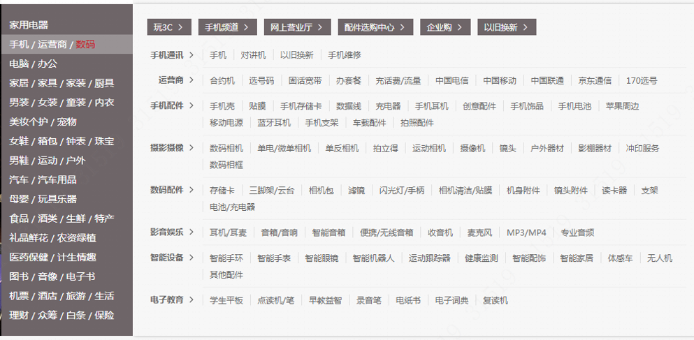

css3中有两个属性可设置投影1box-shadow:x偏移, y偏移, 模糊大小, 色值;
|
|
在上篇京东大导航——预判用户行为（一）
中讲到，我们对导航的切换操作设置了延时，解决了移入子菜单时不执行导航切换的问题。但同时引入了新的问题，即导航的延时造成了切换不流程。
如何才能做到，即保证用户进入子菜单的便捷，又能保证用户切换主导航的流程呢

电商类网站不可避免的需要很多商品分类，为了使用户能够快速定位到想要的商品分类，一个详细的主页导航就显得举足轻重。
淘宝和京东等体量较大的电商平台，web端的主页都使用了分类详细的大导航，而且在导航的用户体验上做足了文章。
下面我们来从零开始模拟开发一个具有二级目录大导航。
长表单是产品设计和开发时不可避免的业务
常见应对长表单的三种设计方案：
某个设备存在多种状态，如在线/离线状态，布放/撤防状态，正常/报警状态等。会同时存在多种状态。需要查询这个设备的状态，并且还能够对状态进行修改。
思路1：第一反应是后台对每个状态0和1传值。多少个状态类别就传多少个字段。前端使用复选框表现对应状态。查询时根据获取的值判断复选框是否被选中。
思路2：进一步思考，可以传一个status字段，为二进制值，每一位代表一个状态类别，0和1代表相应状态。（如果一个类别存在多种状态，比如像预警/报警/正常，可以使用2位字符，00、01、10代表不同状态，）
思路3：再进一步改进，给status字段传一个10进制值，在前端进行转值操作。
例如：1234567@example:5 //后台传递一个十进制的数5->”0101”; //十进制转二进制bit0，表示在离线状态，0-离线，1-在线；bit1，表示布撤防状态，0-撤防，1-布防；bit2，表示报警状态，0-正常，1报警；bit3，表示是否存在消防通道，0-不存在，1-存在
这是根据bootstrap表单验证自己写的一个方法
原理很简单，添加和移除类名has-success和has-error,错误验证中还能设置错误信息1234567891011121314var formValid = { error: function (e, errMsg) { e.parents('.control-group').removeClass('has-success'); e.parents('.control-group').addClass('has-error'); e.siblings('.help-block').text(errMsg); }, success: function (e) { e.parents('.control-group').removeClass('has-error'); e.parents('.control-group').addClass('has-success'); e.siblings('.help-block').text(""); }//在需要的每一处表单事件下调用方法formValid.error($('#name'), '错误提示信息');